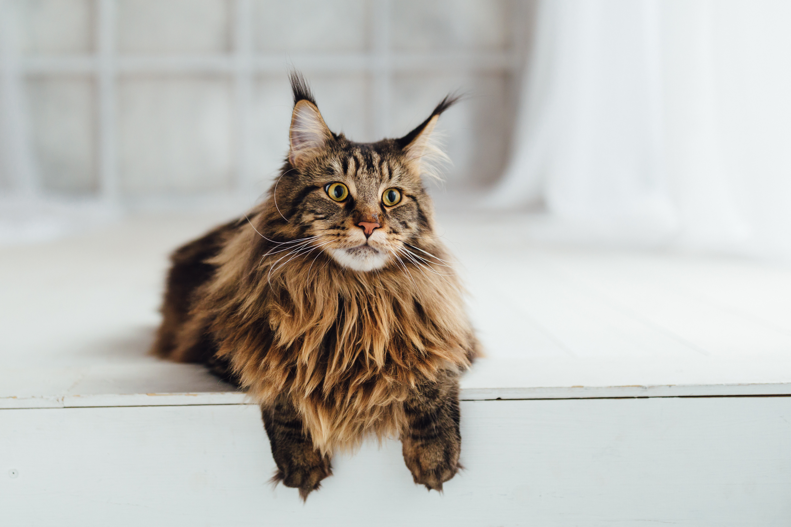

Характер
Что касается типичных кошачьих шалостей, то из-за исполинских размеров котофеев, они могут принимать масштабы стихийного бедствия. Слоновий топот, перевернутые цветочные горшки и разбитые чашки – от подобных сюрпризов не застрахован каждый заводчик. Единственное, что мешает «мэнским енотам» превратить вашу квартиру в постапокалиптический пейзаж, – это спокойный темперамент и страстная любовь к дневному сну. У многих особей обнаруживается сильная тяга к «водным аттракционам», так что если хотите сохранить ванную комнату в относительном порядке, кунов в нее лучше не пускать.

Повадки
Мейн-кунов часто называют кошками-компаньонами. Они дружелюбны, в меру спокойны, но при этом достаточно серьезны и вряд ли оценят панибратство. Коленям хозяина эти великаны предпочтут теплое местечко у его бока или в ногах, из-за чего представителей этой породы часто сравнивают с собаками. Кошки мейн-куны легко приживаются в семье, но при этом обязательно выделят одного человека, за которым будут ходить хвостиком. Еще одна во всех смыслах замечательная особенность породы – тонкий и совершенно не вяжущийся со столь грозным обликом голосок, благодаря которому куны частенько становятся героями смешных роликов в Интернете. Мяукают кошки редко, зато часто издают необычные звуки, похожие на мурчание.
Представители этой породы быстро усваивают привычки хозяина, подстраиваются под них, рады помочь и поучаствовать в его занятиях. С программистом они будут сидеть возле монитора компьютера, балерине принесут в зубах пуанты, футболисту – мяч или бутсы.
Мейн-куны сознательно не замечают незнакомцев в доме – гостей, родственников, друзей. Привыкнув к ним, вполне дружелюбно общаются, если те не пытаются их тискать и насильно брать на руки.
Мейн-куны – кошки ненавязчивые и очень ценящие собственную независимость. Последняя черта особенно ярко выражена у особей женского пола. К тактильному контакту животные относятся благосклонно, но помять и потискать их не получится. Период максимальной двигательной активности представителей этой породы приходится на первые пять лет жизни. По достижении этого «почтенного» возраста коты начинают слегка лениться, предпочитая шумным играм пассивный отдых.
Самцы – очень заботливые родители, с первых дней рождения малышей ухаживают за ними и занимаются воспитанием.